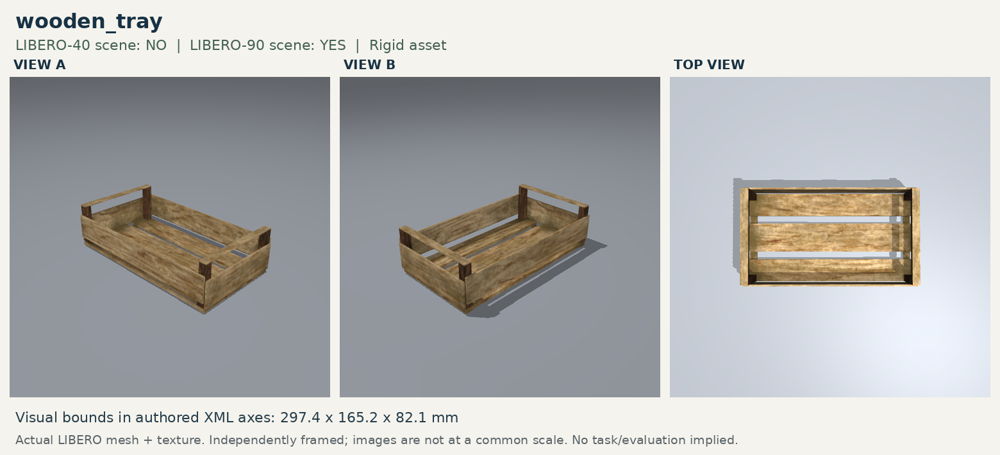

One dining-set relocation, six original wooden-tray transfers, and the six corresponding reachable-pose revisions. All 65 fresh five-episode outcome videos are available below; the strict predicate is unchanged between WTRAY and WTRAYR.
Media loads only after a click; the queue advances in task/episode order.

Exact success definitions and controlled revision
DSETRP: physical On over the exposed mat and dining-set-parent contact. WTRAY / WTRAYR: native In AND full collision-envelope containment (1 mm tolerance) AND positive-force tray contact AND no gripper contact, continuously for five control steps.
WTRAYR changes only reach geometry: tray `(0.10,0.00)` → `(0.10,-0.06)`; for heterogeneous choices the black bowl additionally moves `(-0.13,-0.23)` → `(-0.16,-0.18)`. Task language and strict scoring are unchanged.
Task: Pick up the black bowl at the table center and place it on the dining-set mat.
Original source: Pick the akita black bowl from table center and place it on the plate
Construction: The ramekin is removed and the dining-set mat moves from (0.06, 0.20) to its exact authored center (-0.20, 0.20); all other task content is held fixed.
Task: Pick up the left plate and place it in the wooden tray.
Original source: put the white mug on the left plate and put the yellow and white mug on the right plate
Construction: Controlled revision: the native tray moves 0.06 m toward robot-right, from (0.10,0.00) to (0.10,-0.06); all three plate pickup centers are unchanged.
Goal:in(plate_1, wooden_tray_1_contain_region)
Scoring: Strict: native In + full collision containment + positive-force tray contact + gripper release for five control steps.
Task: Pick up the middle plate and place it in the wooden tray.
Original source: put the white mug on the left plate and put the yellow and white mug on the right plate
Construction: Controlled revision: the native tray moves 0.06 m toward robot-right, from (0.10,0.00) to (0.10,-0.06); all three plate pickup centers are unchanged.
Goal:in(plate_2, wooden_tray_1_contain_region)
Scoring: Strict: native In + full collision containment + positive-force tray contact + gripper release for five control steps.
Task: Pick up the right plate and place it in the wooden tray.
Original source: put the white mug on the left plate and put the yellow and white mug on the right plate
Construction: Controlled revision: the native tray moves 0.06 m toward robot-right, from (0.10,0.00) to (0.10,-0.06); all three plate pickup centers are unchanged.
Goal:in(plate_3, wooden_tray_1_contain_region)
Scoring: Strict: native In + full collision containment + positive-force tray contact + gripper release for five control steps.
Task: Pick up the black bowl and place it in the wooden tray.
Original source: Pick the akita black bowl from table center and place it on the plate
Construction: Controlled revision: the native tray moves 0.06 m toward robot-right, from (0.10,0.00) to (0.10,-0.06). Only the black-bowl pickup center moves, from (-0.13,-0.23) to (-0.16,-0.18); the ramekin and white bowl are unchanged.
Task: Pick up the ramekin and place it in the wooden tray.
Original source: Pick the akita black bowl from table center and place it on the plate
Construction: Controlled revision: the native tray moves 0.06 m toward robot-right, from (0.10,0.00) to (0.10,-0.06). Only the black-bowl pickup center moves, from (-0.13,-0.23) to (-0.16,-0.18); the ramekin and white bowl are unchanged.
Task: Pick up the white bowl and place it in the wooden tray.
Original source: Pick the akita black bowl from table center and place it on the plate
Construction: Controlled revision: the native tray moves 0.06 m toward robot-right, from (0.10,0.00) to (0.10,-0.06). Only the black-bowl pickup center moves, from (-0.13,-0.23) to (-0.16,-0.18); the ramekin and white bowl are unchanged.